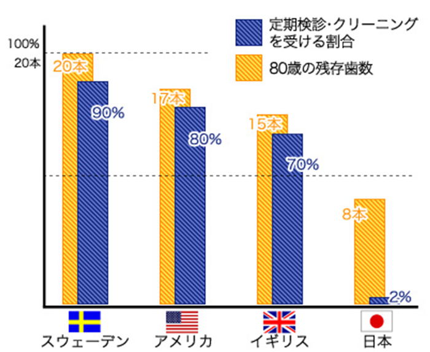
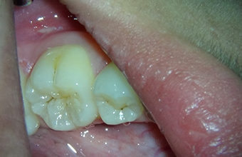
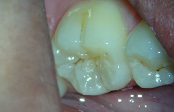
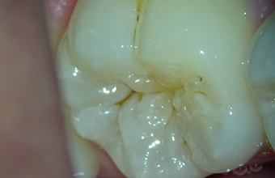
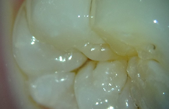
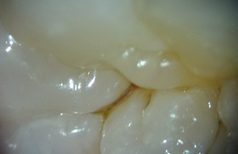
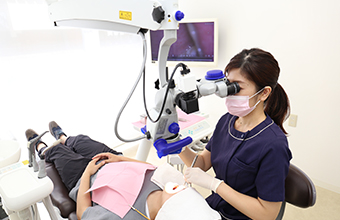
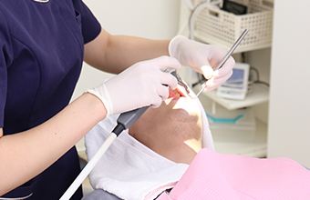

- トップ
- 予防
高田歯科クリニックの予防・メインテナンス
メインテナンスの目的は、持続的なバイオフィルムの破壊と除去を行って、口腔内の健康な状態を維持させ、再発を防止することです。歯周病原菌であるグラム陰性菌群は処置した後12〜16週で、元の歯周細菌叢に戻る傾向にあると言われています。
より良い口腔内環境を持続させる為にはメインテナンスは絶対に必要と考えています。

各国の歯科定期検診とクリーニング受診者の割合で見てみても、日本のメインテナンス率は極めて低く、その為80歳残存歯も
スウェーデンが20本に対し日本では8本と大きな違いがあります。
最近では多くのメディアでもお口の健康と認知症との関係なども取り糺され、喪失歯数と認知機能についての一つの論文では、50歳あるいは60歳時点で高い認知機能を有したものは70歳時点で現在歯数が多い傾向にあったという文献もあります。
（Bachkatib KH,Mortensen EL, Bronnum-Hansen H et al.;Midlife cognitive ability , education, and tooth loss in order danes. J Am Geriatr Soc 65: 194-199,2017.)
このようにご自身の歯を健康な状態で維持するためにはメインテナンスは非常に意味があるものだと思っています。
当院の予防の考え方
日本では多くの人が、「歯科医院は歯が痛くなったら行くところ」という考え方を持っています。しかし歯科医療先進国の欧米では、「予防のために通う」という考え方が一般的になっています。歯が悪くなったら治す、を繰り返すうちに歯の寿命はどんどん短くなっていき、抜歯へと近づいていきます。
歯科医療において本当に大切なことは患者様の「歯を守る」ことです。しかし毎日のブラッシングではとり切れない汚れがあり、一生患者様ご自身の歯で生活するためには、歯科医院のメインテナンスが重要です。予防のプロである衛生士と一緒に、一生ご自身の歯で生活していただけるよう予防に取り組んでいきましょう。
当院の予防・メインテナンスの特徴
メインテナンスにもマイクロスコープ（手術用顕微鏡）を
顕微鏡を用いることで細かな部分を見ることができます。肉眼やルーペに比べ１段階早く問題を発見することができるため、予防し経過を追うことができます。治療が必要になる場合は十分に説明の時間を設け治療方法を選択していただきます。
クリーニングでは、顕微鏡で拡大した状態で汚れを徹底的に除去していきます。特に歯周ポケット内のプラーク（歯周病の原因）や虫歯になりやすい部位のプラークを除去していきます。
-
0.4 3.4倍の実際の視野径直径

-
0.6 5.1倍の実際の視野径直径

-
1.0 8.5倍の実際の視野径直径

-
1.6 15.1倍の実際の視野径直径

-
2.5 21.3倍の実際の視野径直径

動画システム（メインテナンス時の動画）
顕微鏡で見たままを記録、保存することができ、その日のメインテナンスの内容、現在のプラークコントロールの状態、今後起こりうる問題点などリアルタイムで確認でき、ご自身のお口の中の状態を詳しく知って頂くことができます。
当院の予防メニュー
マイクロスコープ（手術用顕微鏡）を用いたメインテナンス

顕微鏡の利点である強拡大と明るい視野により、肉眼やルーペよりも検査の精度が格段に上がります。時間にゆとりを持っているため、きめ細やかなクリーニングと、十分な説明が受けられます。分からないことは質問できご自身のお口の中をきちんと把握することができます。クリーニングには予防効果が高いペーストを使用していきます。
費用：10,000円+税
時間：約90分
担当衛生士制
保険範囲のクリーニング

保険の範囲内で歯周検査を行い、セルフケアでは取りきれない歯肉縁上の歯石を除去していきます。
費用：保険点数による
時間：約30分
担当なし
顕微鏡を用いたメインテナンスの動画（1例）
-
マイクロスコープ（手術用顕微鏡）でのポケット診査
-
マイクロスコープ（手術用顕微鏡）での歯石の確認
-
マイクロスコープ（手術用顕微鏡）での動揺度診査
-
マイクロスコープ（手術用顕微鏡）を使用し、拡大視野下で行うことにより、精度の高いクリーニングはさることながら、早期に問題点を発見することが可能になり、より精密にメインテナンスを行うことが可能になったと考えています。
PICK UP！
お手軽にクリーニングだけ行い方のために通常の保険範囲内でのスケーリングも行っております（1回30～40分）。この場合、マイクロスコープは使用していません。